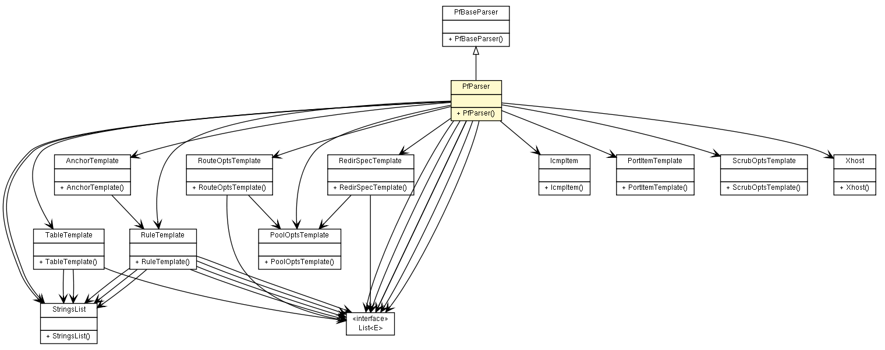

fr.univrennes1.cri.jtacl.equipments.openbsd
Class PfParser

java.lang.Object
 org.parboiled.BaseActions<V>
org.parboiled.BaseParser<T>
fr.univrennes1.cri.jtacl.lib.misc.CommonRules<java.lang.Object>
fr.univrennes1.cri.jtacl.equipments.openbsd.PfBaseParser
fr.univrennes1.cri.jtacl.equipments.openbsd.PfParser
org.parboiled.BaseActions<V>
org.parboiled.BaseParser<T>
fr.univrennes1.cri.jtacl.lib.misc.CommonRules<java.lang.Object>
fr.univrennes1.cri.jtacl.equipments.openbsd.PfBaseParser
fr.univrennes1.cri.jtacl.equipments.openbsd.PfParser
- All Implemented Interfaces:
- org.parboiled.ContextAware<java.lang.Object>
public class PfParser
- extends PfBaseParser
Parser rules for PF.
Taken from OpenBSD rules (parse.y, OpenBSD 4.7)
- Author:
- Patrick Lamaiziere
|
Method Summary |
void |
clear()
Resets the resulting values of the parsing to null. |
java.lang.StringBuilder |
getCurExpandedContext()
|
java.lang.String |
getLastString()
|
java.lang.String |
getMatchedText()
|
java.lang.String |
getName()
|
AnchorTemplate |
getPfAnchor()
|
RuleTemplate |
getPfRule()
|
TableTemplate |
getPfTable()
|
ExpandedRule |
getRule(java.lang.StringBuilder buffer,
java.util.Map<java.lang.String,java.lang.String> symbols)
|
java.lang.String |
getRuleName()
|
java.lang.String |
getValue()
|
org.parboiled.Rule |
IsClosingBrace()
Matches '}\n' |
org.parboiled.Rule |
IsNewRule()
Matches the begining of a rule |
org.parboiled.Rule |
Parse()
Main rule |
org.parboiled.Rule |
PfAction()
Matches action rule
action : PASS
| MATCH
| BLOCK blockspec |
org.parboiled.Rule |
PfAf()
Matches af
af : empty
| INET
| INET6 |
org.parboiled.Rule |
PfAnchorRule()
Matches anchorrule
anchorrule : ANCHOR anchorname dir quick interface af proto fromto
filter_opts pfa_anchor |
org.parboiled.Rule |
PfBlockSpec()
Matches blockspec
blockspec : empty
| DROP
| RETURNRST
| RETURNRST '(' TTL NUMBER ')'
| RETURNICMP
| RETURNICMP6
| RETURNICMP '(' reticmpspec ')'
| RETURNICMP6 '(' reticmp6spec ')'
| RETURNICMP '(' reticmpspec comma reticmp6spec ')'
| RETURN |
org.parboiled.Rule |
PfClosingBrace()
Matches '}' |
org.parboiled.Rule |
PfComma()
Matches comma
comma : ','
| empty |
org.parboiled.Rule |
PfDir()
Matches dir
dir : empty
| IN
| OUT |
org.parboiled.Rule |
PfFilterOpt()
Matches filter_opt
filter_opt : USER uids
| GROUP gids
| flags
| icmpspec
| TOS tos
| keep
| FRAGMENT
| ALLOWOPTS
| LABEL label
| QUEUE qname
| TAG string
| not TAGGED string
| PROBABILITY probability
| RTABLE NUMBER
| DIVERTTO STRING PORT portplain
| DIVERTREPLY
| DIVERTPACKET PORT number
| SCRUB '(' scrub_opts ')'
| NATTO redirpool pool_opts
| RDRTO redirpool pool_opts
| BINATTO redirpool pool_opts
| FASTROUTE
| ROUTETO routespec pool_opts
| REPLYTO routespec pool_opts
| DUPTO routespec pool_opts
| RECEIVEDON if_item |
org.parboiled.Rule |
PfFilterOpts()
Matches filter_opts
filter_opts : filter_opts_l
| empty |
org.parboiled.Rule |
PfFilterOptsl()
Matches filter_opts_l
filter_opts_l : filter_opts_l filter_opt
| filter_opt |
org.parboiled.Rule |
PfFlag()
Matches flag
flag : STRING |
org.parboiled.Rule |
PfFlags()
Matches flags
flags : FLAGS flag '/' flag
| FLAGS '/' flag
| FLAGS ANY |
org.parboiled.Rule |
PfFlush()
Matches flush
flush : empty
| FLUSH
| FLUSH GLOBAL |
org.parboiled.Rule |
PfFrom()
Matches from
from : empty
| FROM ipportspec |
org.parboiled.Rule |
PfFromTo()
Matches fromto
fromto : ALL
| from os to |
org.parboiled.Rule |
PfGenericAtom()
|
org.parboiled.Rule |
PfGenericList()
|
org.parboiled.Rule |
PfGenericListItem()
|
org.parboiled.Rule |
PfGenericRule()
Generic PF syntax rule |
org.parboiled.Rule |
PfGenericRuleItem()
|
org.parboiled.Rule |
PfGenericSpecial()
|
org.parboiled.Rule |
PfGid()
Matches gid
gid : STRING
| NUMBER |
org.parboiled.Rule |
PfGidItem()
Matches gid_item
gid_item : gid
| unaryop gid
| gid PORTBINARY gid |
org.parboiled.Rule |
PfGidList()
Matches gid_list
gid_list : gid_item optnl
| gid_list comma gid_item optnl |
org.parboiled.Rule |
PfGids()
Matches gids
gids : gid_item
| '{' optnl gid_list '}' |
org.parboiled.Rule |
PfHost()
Matches host
host : STRING
| STRING '-' STRING
| STRING '/' NUMBER
| NUMBER '/' NUMBER
| dynaddr
| dynaddr '/' NUMBER
| '<' STRING '>'
| ROUTE STRING |
org.parboiled.Rule |
PfHostList()
Matches host_list
host_list : ipspec optnl
| host_list comma ipspec optnl |
org.parboiled.Rule |
PfIcmp6List()
Matches icmp6_list
icmp6_list : icmp_item optnl
| icmp6_list comma icmp_item optnl |
org.parboiled.Rule |
PfIcmpItem()
Matches icmp_item
icmp_item : icmptype
| icmptype CODE STRING
| icmptype CODE NUMBER |
org.parboiled.Rule |
PfIcmpList()
Matches icmp_list
icmp_list : icmp_item optnl
| icmp_list comma icmp_item optnl |
org.parboiled.Rule |
PfIcmpSpec()
Matches icmpspec
icmpspec : ICMPTYPE icmp_item
| ICMPTYPE '{' optnl icmp_list '}'
| ICMP6TYPE icmp6_item
| ICMP6TYPE '{' optnl icmp6_list '}' |
org.parboiled.Rule |
PfIcmpType()
Matches icmptype
icmptype : STRING
| NUMBER |
org.parboiled.Rule |
PfIfItem()
Matches if_item
if_item : STRING |
org.parboiled.Rule |
PfIfItemNot()
Matches if_item_not
if_item_not : not if_item |
org.parboiled.Rule |
PfIfList()
Matches if_list
if_list : if_item_not optnl
| if_list comma if_item_not optnl |
org.parboiled.Rule |
PfInclude()
Matches include rule
include : INCLUDE STRING |
org.parboiled.Rule |
PfInterface()
Matches interface
interface : empty
| ON if_item_not
| ON '{' optnl if_list '}' |
org.parboiled.Rule |
PfIpPortSpec()
Matches ipportspec
ipportspec : ipspec
| ipspec PORT portspec
| PORT portspec |
org.parboiled.Rule |
PfIpSpec()
Matches ipspec
ipspec : ANY
| xhost
| '{' optnl host_list '}' |
org.parboiled.Rule |
PfKeep()
Matches keep
keep : NO STATE
| KEEP STATE state_opt_spec
| MODULATE STATE state_opt_spec
| SYNPROXY STATE state_opt_spec |
org.parboiled.Rule |
PfLabel()
Matches label
label : STRING |
org.parboiled.Rule |
PfLoadRule()
Matches loadrule
loadrule : LOAD ANCHOR string FROM string |
org.parboiled.Rule |
PfLog()
Matches log
log : LOG
| LOG '(' logopts ')' |
org.parboiled.Rule |
PfLogOpt()
Matches logopt
logopt : ALL
| USER
| GROUP
| TO string |
org.parboiled.Rule |
PfLogOpts()
Matches logopts
logopts : logopt
| logopts comma logopt |
org.parboiled.Rule |
PfLogQuick()
Matches logquick
logquick : empty
| log
| QUICK
| log QUICK
| QUICK log |
org.parboiled.Rule |
PfMacro()
Matches a macro |
org.parboiled.Rule |
PfMacroValue()
macro value
macrovalue : STRING
| STRING macrovalue |
org.parboiled.Rule |
PfNot()
Matches not
not : '!' |
org.parboiled.Rule |
PfOption()
Matches option: set skip interface |
org.parboiled.Rule |
PfOptnl()
Matches optnl
optnl : '\n'
| empty |
org.parboiled.Rule |
PfOs()
Matches os
os : empty
| OS xos
| OS '{' optnl os_list '}' |
org.parboiled.Rule |
PfOsList()
Matches os_list
os_list : xos optnl
| os_list comma xos optnl |
org.parboiled.Rule |
PfPoolOpt()
Matches pool_opt
pool_opt : BITMASK
| RANDOM
| SOURCEHASH hashkey
| ROUNDROBIN
| STATICPORT
| STICKYADDRESS |
org.parboiled.Rule |
PfPoolOpts()
Matches pool_opts
pool_opts : pool_opts_l
| empty |
org.parboiled.Rule |
PfPoolOptsL()
Matches pool_opts_l
pool_opts_l : pool_opts_l pool_opt
| pool_opt |
org.parboiled.Rule |
PfPortBinary()
Matches PORTBINARY
PORTBINAY : "<>" | "><" |
org.parboiled.Rule |
PfPortItem()
Matches port_item
port_item : portrange
| unaryop portrange
| portrange PORTBINARY portrange |
org.parboiled.Rule |
PfPortList()
Matches port_list
port_list : port_item optnl
| port_list comma port_item optnl |
org.parboiled.Rule |
PfPortPlain()
Matches portplain
portplain : numberstring |
org.parboiled.Rule |
PfPortRange()
Matches portrange. |
org.parboiled.Rule |
PfPortSpec()
Matches portspec
portspec : port_item
| '{' optnl port_list '}' |
org.parboiled.Rule |
PfProbability()
Matches probability
probability : STRING
| NUMBER |
org.parboiled.Rule |
PfProto()
Matches proto
proto : empty
| PROTO proto_item
| PROTO '{' optnl proto_list '}' |
org.parboiled.Rule |
PfProtoItem()
Matches proto_item
proto_item : protoval |
org.parboiled.Rule |
PfProtoList()
Matches proto_list
proto_list : proto_item optnl
| proto_list comma proto_item optnl |
org.parboiled.Rule |
PfQname()
Matches qname
qname : STRING
| '(' STRING ')'
| '(' STRING comma STRING ')' |
org.parboiled.Rule |
PfQuick()
Matches quick
quick : empty
| QUICK |
org.parboiled.Rule |
PfQuotedString()
Matches a quoted string. |
org.parboiled.Rule |
PfRedirHostList()
Matches redir_host_list
redir_host_list : host optnl
| redir_host_list comma host optnl |
org.parboiled.Rule |
PfRedirPool()
Matches redirpool
redirpool : redirspec
| redirspec PORT portstar |
org.parboiled.Rule |
PfRedirSpec()
Matches redirspec
redirspec : host
| '{' optnl redir_host_list '}' |
org.parboiled.Rule |
PfRetIcmp6Spec()
Matches reticmp6spec
reticmp6spec : STRING
| NUMBER |
org.parboiled.Rule |
PfRetIcmpSpec()
Matches reticmpspec
reticmpspec : STRING
| NUMBER |
org.parboiled.Rule |
PfRouteHost()
Matches route_host
route_host : STRING
| STRING '/' STRING
| '<' STRING '>'
| dynaddr '/' NUMBER
| '(' STRING host ')' |
org.parboiled.Rule |
PfRouteHostList()
Matches route_host_list
route_host_list : route_host optnl
| route_host_list comma route_host optnl |
org.parboiled.Rule |
PfRouteSpec()
Matches routespec
routespec : route_host
| '{' optnl route_host_list '}' |
org.parboiled.Rule |
PfRule()
Matches a filter rules
pfrule : action dir logquick interface af proto fromto filter_opts |
org.parboiled.Rule |
PfScrubOpt()
Matches scrub_opt
scrub_opt : NODF
| MINTTL NUMBER
| MAXMSS NUMBER
| SETTOS tos
| REASSEMBLE STRING
| RANDOMID |
org.parboiled.Rule |
PfScrubOpts()
Matches scrub_opts
scrub_opts : scrub_opts_l |
org.parboiled.Rule |
PfScrubOptsL()
Matches scrub_opts_l
scrub_opts_l : scrub_opts_l comma scrub_opt
| scrub_opt |
org.parboiled.Rule |
PfSourceTrack()
Matches sourcetrack
sourcetrack : empty
| GLOBAL
| RULE |
org.parboiled.Rule |
PfStateLock()
Matches statelock
statelock : IFBOUND
| FLOATING |
org.parboiled.Rule |
PfStateOptItem()
Matches state_opt_item
state_opt_item : MAXIMUM NUMBER
| NOSYNC
| MAXSRCSTATES NUMBER
| MAXSRCCONN NUMBER
| MAXSRCCONNRATE NUMBER '/' NUMBER
| OVERLOAD '<' STRING '>' flush
| MAXSRCNODES NUMBER
| SOURCETRACK sourcetrack
| statelock
| SLOPPY
| PFLOW
| STRING NUMBER // nota: time out |
org.parboiled.Rule |
PfStateOptList()
Matches state_opt_list
state_opt_list : state_opt_item
| state_opt_list comma state_opt_item |
org.parboiled.Rule |
PfStateOptSpec()
Matches state_opt_spec
state_opt_spec : '(' state_opt_list ')'
| empty |
org.parboiled.Rule |
PfString()
Matches STRING : Atom or PfQuotedString |
org.parboiled.Rule |
PfTableDef()
Matches tabledef
tabledef : TABLE '<' STRING '>' table_opts |
org.parboiled.Rule |
PfTableOpt()
Matches table_opt
table_opt : STRING
| '{' optnl '}'
| '{' optnl host_list '}'
| FILENAME STRING |
org.parboiled.Rule |
PfTableOpts()
Matches table_opts
table_opts : table_opts_l
| empty |
org.parboiled.Rule |
PfTableOptsL()
Matches table_opts_l
table_opts_l : table_opts_l table_opt
| table_opt |
org.parboiled.Rule |
PfTo()
Matches to
to : empty
| TO ipportspec |
org.parboiled.Rule |
PfTos()
Matches tos
tos : STRING
| NUMBER |
org.parboiled.Rule |
PfUid()
Matches uid
uid : STRING
| NUMBER |
org.parboiled.Rule |
PfUidItem()
Matches uid_item
uid_item : uid
| unaryop uid
| uid PORTBINARY uid |
org.parboiled.Rule |
PfUidList()
Matches uid_list
uid_list : uid_item optnl
| uid_list comma uid_item optnl |
org.parboiled.Rule |
PfUids()
Matches uids
uids : uid_item
| '{' optnl uid_list '}' |
org.parboiled.Rule |
PfUnaryOp()
Matches unaryop
unaryop : '='
| NE
| LE
| '<'
| GE
| '>' |
org.parboiled.Rule |
PfXHost()
Matches xhost
xhost : not host
| not NOROUTE
| not URPFFAILED |
org.parboiled.Rule |
PfXOs()
Matches xos
xos : STRING |
boolean |
shouldMatch(java.lang.String line)
Returns true if the line in argument should match a rule. |
| Methods inherited from class fr.univrennes1.cri.jtacl.equipments.openbsd.PfBaseParser |
ALL, ALLOWOPTS, ALTQ, ANCHOR, ANTISPOOF, ANY, BANDWIDTH, BINATTO, BITMASK, BLOCK, BLOCKPOLICY, CBQ, CODE, DEBUG, DIVERTPACKET, DIVERTREPLY, DIVERTTO, DROP, DUPTO, FASTROUTE, FILENAME, FINGERPRINTS, FLAGS, FLOATING, FLUSH, FOR, FRAGCROP, FRAGDROP, FRAGMENT, FROM, GLOBAL, GROUP, HFSC, HOSTID, ICMP6TYPE, ICMPTYPE, IFBOUND, IN, INCLUDE, INET, INET6, KEEP, LABEL, LIMIT, LINKSHARE, LOAD, LOG, LOGINTERFACE, MATCH, MAXIMUM, MAXMSS, MAXSRCCONN, MAXSRCCONNRATE, MAXSRCNODES, MAXSRCSTATES, MINTTL, MODULATE, NAT, NATANCHOR, NATTO, NextIsSeparator, NO, NODF, NOROUTE, NOSYNC, ON, OPTIMIZATION, OS, OUT, OVERLOAD, PASS, PfAtom, PfIdent, PfKeyword, PFLOW, PfSeparators, PORT, PRIORITY, PRIQ, PROBABILITY, PROTO, QLIMIT, QUEUE, QUICK, RANDOM, RANDOMID, RDR, RDRANCHOR, RDRTO, REALTIME, REASSEMBLE, RECEIVEDON, REPLYTO, REQUIREORDER, RETURN, RETURNICMP, RETURNICMP6, RETURNRST, ROUNDROBIN, ROUTE, ROUTETO, RTABLE, RULE, RULESET_OPTIMIZATION, SCRUB, SET, SETTOS, SKIP, SLOPPY, SOURCEHASH, SOURCETRACK, STATE, STATEDEFAULTS, STATEPOLICY, STATICPORT, STICKYADDRESS, SYNPROXY, TABLE, TAG, TAGGED, TBRSIZE, TIMEOUT, TO, TOS, TTL, UPPERLIMIT, URPFFAILED, USER, WhiteSpace |
| Methods inherited from class org.parboiled.BaseParser |
ACTION, Any, Ch, CharIgnoreCase, CharRange, CharSet, CharSet, CharSet, DOWN, DOWN2, DOWN3, DOWN4, DOWN5, DOWN6, Empty, Eoi, FirstOf, FirstOf, FromCharArray, FromCharLiteral, FromStringLiteral, newInstance, OneOrMore, Optional, Sequence, Sequence, String, String, StringIgnoreCase, StringIgnoreCase, Test, TestNot, ToRule, ToRules, UP, UP2, UP3, UP4, UP5, UP6, ZeroOrMore |
| Methods inherited from class org.parboiled.BaseActions |
character, character, chars, chars, currentChar, getContext, hasError, inPredicate, lastChar, lastNode, lastText, lastValue, node, nodeByLabel, nodes, nodesByLabel, nodeSuppressed, prevChar, prevEnd, prevStart, prevText, prevValue, set, set, setContext, text, text, texts, texts, value, value, value, values, values |
| Methods inherited from class java.lang.Object |
clone, equals, finalize, getClass, hashCode, notify, notifyAll, toString, wait, wait, wait |
PfParser
public PfParser()
getName
public java.lang.String getName()
getRuleName
public java.lang.String getRuleName()
getMatchedText
public java.lang.String getMatchedText()
getValue
public java.lang.String getValue()
getLastString
public java.lang.String getLastString()
getPfRule
public RuleTemplate getPfRule()
getPfTable
public TableTemplate getPfTable()
getPfAnchor
public AnchorTemplate getPfAnchor()
getCurExpandedContext
public java.lang.StringBuilder getCurExpandedContext()
getRule
public ExpandedRule getRule(java.lang.StringBuilder buffer,
java.util.Map<java.lang.String,java.lang.String> symbols)
clear
public void clear()
- Resets the resulting values of the parsing to null.
shouldMatch
public boolean shouldMatch(java.lang.String line)
- Returns true if the line in argument should match a rule.
- Parameters:
line -
- Returns:
- true if the line in argument should match a rule.
IsNewRule
public org.parboiled.Rule IsNewRule()
- Matches the begining of a rule
- Returns:
- a Rule
IsClosingBrace
public org.parboiled.Rule IsClosingBrace()
- Matches '}\n'
- Returns:
- a Rule
PfGenericRule
public org.parboiled.Rule PfGenericRule()
- Generic PF syntax rule
- Returns:
- a rule
PfGenericRuleItem
public org.parboiled.Rule PfGenericRuleItem()
PfGenericList
public org.parboiled.Rule PfGenericList()
PfGenericListItem
public org.parboiled.Rule PfGenericListItem()
PfGenericSpecial
public org.parboiled.Rule PfGenericSpecial()
PfGenericAtom
public org.parboiled.Rule PfGenericAtom()
Parse
public org.parboiled.Rule Parse()
- Main rule
- Returns:
- a
Rule
PfClosingBrace
public org.parboiled.Rule PfClosingBrace()
- Matches '}'
- Returns:
- a Rule
PfMacro
public org.parboiled.Rule PfMacro()
- Matches a macro
- Returns:
- a Rule.
PfMacroValue
public org.parboiled.Rule PfMacroValue()
- macro value
macrovalue : STRING
| STRING macrovalue
- Returns:
- a Rule
PfNot
public org.parboiled.Rule PfNot()
- Matches not
not : '!'
| empty
- Returns:
- a Rule
PfTableDef
public org.parboiled.Rule PfTableDef()
- Matches tabledef
tabledef : TABLE '<' STRING '>' table_opts
- Returns:
- a Rule
PfTableOpts
public org.parboiled.Rule PfTableOpts()
- Matches table_opts
table_opts : table_opts_l
| empty
- Returns:
- a Rule
PfTableOptsL
public org.parboiled.Rule PfTableOptsL()
- Matches table_opts_l
table_opts_l : table_opts_l table_opt
| table_opt
PfTableOpt
public org.parboiled.Rule PfTableOpt()
- Matches table_opt
table_opt : STRING
| '{' optnl '}'
| '{' optnl host_list '}'
| FILENAME STRING
- Returns:
- a Rule
PfInclude
public org.parboiled.Rule PfInclude()
- Matches include rule
include : INCLUDE STRING
- Returns:
- a Rule.
PfOption
public org.parboiled.Rule PfOption()
- Matches option: set skip interface
- Returns:
- a Rule
PfAnchorRule
public org.parboiled.Rule PfAnchorRule()
- Matches anchorrule
anchorrule : ANCHOR anchorname dir quick interface af proto fromto
filter_opts pfa_anchor
- Returns:
- a Rule
PfLoadRule
public org.parboiled.Rule PfLoadRule()
- Matches loadrule
loadrule : LOAD ANCHOR string FROM string
- Returns:
- a Rule
PfScrubOpts
public org.parboiled.Rule PfScrubOpts()
- Matches scrub_opts
scrub_opts : scrub_opts_l
- Returns:
- a Rule
PfScrubOptsL
public org.parboiled.Rule PfScrubOptsL()
- Matches scrub_opts_l
scrub_opts_l : scrub_opts_l comma scrub_opt
| scrub_opt
- Returns:
- a Rule
PfScrubOpt
public org.parboiled.Rule PfScrubOpt()
- Matches scrub_opt
scrub_opt : NODF
| MINTTL NUMBER
| MAXMSS NUMBER
| SETTOS tos
| REASSEMBLE STRING
| RANDOMID
- Returns:
- a Rule
PfRule
public org.parboiled.Rule PfRule()
- Matches a filter rules
pfrule : action dir logquick interface af proto fromto filter_opts
- Returns:
- a Rule.
PfFilterOpts
public org.parboiled.Rule PfFilterOpts()
- Matches filter_opts
filter_opts : filter_opts_l
| empty
- Returns:
- a Rule
PfFilterOptsl
public org.parboiled.Rule PfFilterOptsl()
- Matches filter_opts_l
filter_opts_l : filter_opts_l filter_opt
| filter_opt
PfFilterOpt
public org.parboiled.Rule PfFilterOpt()
- Matches filter_opt
filter_opt : USER uids
| GROUP gids
| flags
| icmpspec
| TOS tos
| keep
| FRAGMENT
| ALLOWOPTS
| LABEL label
| QUEUE qname
| TAG string
| not TAGGED string
| PROBABILITY probability
| RTABLE NUMBER
| DIVERTTO STRING PORT portplain
| DIVERTREPLY
| DIVERTPACKET PORT number
| SCRUB '(' scrub_opts ')'
| NATTO redirpool pool_opts
| RDRTO redirpool pool_opts
| BINATTO redirpool pool_opts
| FASTROUTE
| ROUTETO routespec pool_opts
| REPLYTO routespec pool_opts
| DUPTO routespec pool_opts
| RECEIVEDON if_item
- Returns:
- a Rule
PfProbability
public org.parboiled.Rule PfProbability()
- Matches probability
probability : STRING
| NUMBER
- Returns:
- a Rule
PfAction
public org.parboiled.Rule PfAction()
- Matches action rule
action : PASS
| MATCH
| BLOCK blockspec
- Returns:
- a Rule.
PfBlockSpec
public org.parboiled.Rule PfBlockSpec()
- Matches blockspec
blockspec : empty
| DROP
| RETURNRST
| RETURNRST '(' TTL NUMBER ')'
| RETURNICMP
| RETURNICMP6
| RETURNICMP '(' reticmpspec ')'
| RETURNICMP6 '(' reticmp6spec ')'
| RETURNICMP '(' reticmpspec comma reticmp6spec ')'
| RETURN
- Returns:
- a Rule.
PfRetIcmpSpec
public org.parboiled.Rule PfRetIcmpSpec()
- Matches reticmpspec
reticmpspec : STRING
| NUMBER
- Returns:
- a Rule
PfRetIcmp6Spec
public org.parboiled.Rule PfRetIcmp6Spec()
- Matches reticmp6spec
reticmp6spec : STRING
| NUMBER
- Returns:
- a Rule
PfDir
public org.parboiled.Rule PfDir()
- Matches dir
dir : empty
| IN
| OUT
- Returns:
- a Rule.
PfQuick
public org.parboiled.Rule PfQuick()
- Matches quick
quick : empty
| QUICK
- Returns:
- a Rule
PfLogQuick
public org.parboiled.Rule PfLogQuick()
- Matches logquick
logquick : empty
| log
| QUICK
| log QUICK
| QUICK log
- Returns:
- a Rule.
PfLog
public org.parboiled.Rule PfLog()
- Matches log
log : LOG
| LOG '(' logopts ')'
- Returns:
- a Rule
PfLogOpts
public org.parboiled.Rule PfLogOpts()
- Matches logopts
logopts : logopt
| logopts comma logopt
- Returns:
- a Rule
PfLogOpt
public org.parboiled.Rule PfLogOpt()
- Matches logopt
logopt : ALL
| USER
| GROUP
| TO string
- Returns:
- a Rule
PfInterface
public org.parboiled.Rule PfInterface()
- Matches interface
interface : empty
| ON if_item_not
| ON '{' optnl if_list '}'
- Returns:
- a Rule.
PfIfList
public org.parboiled.Rule PfIfList()
- Matches if_list
if_list : if_item_not optnl
| if_list comma if_item_not optnl
- Returns:
- a Rule
PfIfItemNot
public org.parboiled.Rule PfIfItemNot()
- Matches if_item_not
if_item_not : not if_item
- Returns:
- a Rule
PfIfItem
public org.parboiled.Rule PfIfItem()
- Matches if_item
if_item : STRING
- Returns:
- a Rule
PfAf
public org.parboiled.Rule PfAf()
- Matches af
af : empty
| INET
| INET6
- Returns:
- a Rule
PfProto
public org.parboiled.Rule PfProto()
- Matches proto
proto : empty
| PROTO proto_item
| PROTO '{' optnl proto_list '}'
- Returns:
- a Rule.
PfProtoList
public org.parboiled.Rule PfProtoList()
- Matches proto_list
proto_list : proto_item optnl
| proto_list comma proto_item optnl
- Returns:
- a Rule
PfProtoItem
public org.parboiled.Rule PfProtoItem()
- Matches proto_item
proto_item : protoval
- Returns:
PfFromTo
public org.parboiled.Rule PfFromTo()
- Matches fromto
fromto : ALL
| from os to
- Returns:
- a Rule
PfOs
public org.parboiled.Rule PfOs()
- Matches os
os : empty
| OS xos
| OS '{' optnl os_list '}'
- Returns:
- a Rule
PfXOs
public org.parboiled.Rule PfXOs()
- Matches xos
xos : STRING
- Returns:
- a Rule
PfOsList
public org.parboiled.Rule PfOsList()
- Matches os_list
os_list : xos optnl
| os_list comma xos optnl
- Returns:
- a Rule
PfFrom
public org.parboiled.Rule PfFrom()
- Matches from
from : empty
| FROM ipportspec
- Returns:
- a Rule
PfTo
public org.parboiled.Rule PfTo()
- Matches to
to : empty
| TO ipportspec
- Returns:
- a Rule
PfIpPortSpec
public org.parboiled.Rule PfIpPortSpec()
- Matches ipportspec
ipportspec : ipspec
| ipspec PORT portspec
| PORT portspec
- Returns:
- a Rule
PfOptnl
public org.parboiled.Rule PfOptnl()
- Matches optnl
optnl : '\n'
| empty
- Returns:
- a Rule.
PfIpSpec
public org.parboiled.Rule PfIpSpec()
- Matches ipspec
ipspec : ANY
| xhost
| '{' optnl host_list '}'
- Returns:
- a Rule
PfHostList
public org.parboiled.Rule PfHostList()
- Matches host_list
host_list : ipspec optnl
| host_list comma ipspec optnl
- Returns:
- a Rule
PfXHost
public org.parboiled.Rule PfXHost()
- Matches xhost
xhost : not host
| not NOROUTE
| not URPFFAILED
- Returns:
- a Rule
PfHost
public org.parboiled.Rule PfHost()
- Matches host
host : STRING
| STRING '-' STRING
| STRING '/' NUMBER
| NUMBER '/' NUMBER
| dynaddr
| dynaddr '/' NUMBER
| '<' STRING '>'
| ROUTE STRING
- Returns:
- a Rule
PfPortSpec
public org.parboiled.Rule PfPortSpec()
- Matches portspec
portspec : port_item
| '{' optnl port_list '}'
- Returns:
- a Rule
PfPortList
public org.parboiled.Rule PfPortList()
- Matches port_list
port_list : port_item optnl
| port_list comma port_item optnl
- Returns:
- a Rule
PfPortItem
public org.parboiled.Rule PfPortItem()
- Matches port_item
port_item : portrange
| unaryop portrange
| portrange PORTBINARY portrange
- Returns:
- a Rule
PfPortPlain
public org.parboiled.Rule PfPortPlain()
- Matches portplain
portplain : numberstring
- Returns:
- a Rule
PfPortRange
public org.parboiled.Rule PfPortRange()
- Matches portrange.
portrange : numberstring
- Returns:
- a Rule
PfUids
public org.parboiled.Rule PfUids()
- Matches uids
uids : uid_item
| '{' optnl uid_list '}'
- Returns:
- a Rule
PfUidList
public org.parboiled.Rule PfUidList()
- Matches uid_list
uid_list : uid_item optnl
| uid_list comma uid_item optnl
- Returns:
- a Rule
PfUidItem
public org.parboiled.Rule PfUidItem()
- Matches uid_item
uid_item : uid
| unaryop uid
| uid PORTBINARY uid
- Returns:
- a Rule
PfUid
public org.parboiled.Rule PfUid()
- Matches uid
uid : STRING
| NUMBER
- Returns:
- a Rule
PfGids
public org.parboiled.Rule PfGids()
- Matches gids
gids : gid_item
| '{' optnl gid_list '}'
- Returns:
- a Rule
PfGidList
public org.parboiled.Rule PfGidList()
- Matches gid_list
gid_list : gid_item optnl
| gid_list comma gid_item optnl
- Returns:
- a Rule
PfGidItem
public org.parboiled.Rule PfGidItem()
- Matches gid_item
gid_item : gid
| unaryop gid
| gid PORTBINARY gid
- Returns:
- a Rule
PfGid
public org.parboiled.Rule PfGid()
- Matches gid
gid : STRING
| NUMBER
- Returns:
- a Rule
PfFlag
public org.parboiled.Rule PfFlag()
- Matches flag
flag : STRING
- Returns:
- a Rule
PfFlags
public org.parboiled.Rule PfFlags()
- Matches flags
flags : FLAGS flag '/' flag
| FLAGS '/' flag
| FLAGS ANY
- Returns:
- a Rule
PfIcmpSpec
public org.parboiled.Rule PfIcmpSpec()
- Matches icmpspec
icmpspec : ICMPTYPE icmp_item
| ICMPTYPE '{' optnl icmp_list '}'
| ICMP6TYPE icmp6_item
| ICMP6TYPE '{' optnl icmp6_list '}'
- Returns:
- a Rule
PfIcmpList
public org.parboiled.Rule PfIcmpList()
- Matches icmp_list
icmp_list : icmp_item optnl
| icmp_list comma icmp_item optnl
- Returns:
- a Rule
PfIcmp6List
public org.parboiled.Rule PfIcmp6List()
- Matches icmp6_list
icmp6_list : icmp_item optnl
| icmp6_list comma icmp_item optnl
- Returns:
- a Rule
PfIcmpItem
public org.parboiled.Rule PfIcmpItem()
- Matches icmp_item
icmp_item : icmptype
| icmptype CODE STRING
| icmptype CODE NUMBER
- Returns:
- a Rule
PfIcmpType
public org.parboiled.Rule PfIcmpType()
- Matches icmptype
icmptype : STRING
| NUMBER
- Returns:
- a Rule
PfTos
public org.parboiled.Rule PfTos()
- Matches tos
tos : STRING
| NUMBER
- Returns:
- a Rule
PfSourceTrack
public org.parboiled.Rule PfSourceTrack()
- Matches sourcetrack
sourcetrack : empty
| GLOBAL
| RULE
- Returns:
- a Rule
PfStateLock
public org.parboiled.Rule PfStateLock()
- Matches statelock
statelock : IFBOUND
| FLOATING
PfKeep
public org.parboiled.Rule PfKeep()
- Matches keep
keep : NO STATE
| KEEP STATE state_opt_spec
| MODULATE STATE state_opt_spec
| SYNPROXY STATE state_opt_spec
- Returns:
- a Rule
PfStateOptSpec
public org.parboiled.Rule PfStateOptSpec()
- Matches state_opt_spec
state_opt_spec : '(' state_opt_list ')'
| empty
- Returns:
- a Rule
PfFlush
public org.parboiled.Rule PfFlush()
- Matches flush
flush : empty
| FLUSH
| FLUSH GLOBAL
- Returns:
- a Rule
PfStateOptList
public org.parboiled.Rule PfStateOptList()
- Matches state_opt_list
state_opt_list : state_opt_item
| state_opt_list comma state_opt_item
- Returns:
- a Rule
PfStateOptItem
public org.parboiled.Rule PfStateOptItem()
- Matches state_opt_item
state_opt_item : MAXIMUM NUMBER
| NOSYNC
| MAXSRCSTATES NUMBER
| MAXSRCCONN NUMBER
| MAXSRCCONNRATE NUMBER '/' NUMBER
| OVERLOAD '<' STRING '>' flush
| MAXSRCNODES NUMBER
| SOURCETRACK sourcetrack
| statelock
| SLOPPY
| PFLOW
| STRING NUMBER // nota: time out
- Returns:
- a Rule
PfLabel
public org.parboiled.Rule PfLabel()
- Matches label
label : STRING
- Returns:
- a Rule
PfQname
public org.parboiled.Rule PfQname()
- Matches qname
qname : STRING
| '(' STRING ')'
| '(' STRING comma STRING ')'
- Returns:
- a Rule
PfRedirSpec
public org.parboiled.Rule PfRedirSpec()
- Matches redirspec
redirspec : host
| '{' optnl redir_host_list '}'
- Returns:
- a Rule
PfRedirHostList
public org.parboiled.Rule PfRedirHostList()
- Matches redir_host_list
redir_host_list : host optnl
| redir_host_list comma host optnl
- Returns:
- a Rule
PfRedirPool
public org.parboiled.Rule PfRedirPool()
- Matches redirpool
redirpool : redirspec
| redirspec PORT portstar
- Returns:
- a Rule
PfPoolOpts
public org.parboiled.Rule PfPoolOpts()
- Matches pool_opts
pool_opts : pool_opts_l
| empty
- Returns:
- a Rule
PfPoolOptsL
public org.parboiled.Rule PfPoolOptsL()
- Matches pool_opts_l
pool_opts_l : pool_opts_l pool_opt
| pool_opt
- Returns:
- a Rule
PfPoolOpt
public org.parboiled.Rule PfPoolOpt()
- Matches pool_opt
pool_opt : BITMASK
| RANDOM
| SOURCEHASH hashkey
| ROUNDROBIN
| STATICPORT
| STICKYADDRESS
- Returns:
- a Rule
PfRouteHost
public org.parboiled.Rule PfRouteHost()
- Matches route_host
route_host : STRING
| STRING '/' STRING
| '<' STRING '>'
| dynaddr '/' NUMBER
| '(' STRING host ')'
- Returns:
- a Rule
PfRouteHostList
public org.parboiled.Rule PfRouteHostList()
- Matches route_host_list
route_host_list : route_host optnl
| route_host_list comma route_host optnl
- Returns:
- a Rule
PfRouteSpec
public org.parboiled.Rule PfRouteSpec()
- Matches routespec
routespec : route_host
| '{' optnl route_host_list '}'
- Returns:
- a Rule
PfComma
public org.parboiled.Rule PfComma()
- Matches comma
comma : ','
| empty
PfUnaryOp
public org.parboiled.Rule PfUnaryOp()
- Matches unaryop
unaryop : '='
| NE
| LE
| '<'
| GE
| '>'
- Returns:
- a Rule
PfPortBinary
public org.parboiled.Rule PfPortBinary()
- Matches PORTBINARY
PORTBINAY : "<>" | "><"
- Returns:
- a Rule
PfString
public org.parboiled.Rule PfString()
- Matches STRING : Atom or PfQuotedString
- Returns:
- a Rule.
PfQuotedString
public org.parboiled.Rule PfQuotedString()
- Matches a quoted string.
- Returns:
- a Rule
Copyright © 2010. All Rights Reserved.